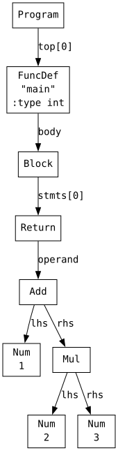
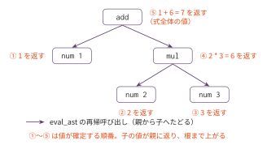

コマ1: AST + インタープリター
今日のゴール
提供 Lexer/Parser が返す AST を走査し、eval_ast() で式を評価する。
この回では RV64 アセンブリは出力しない。
Cプログラム全体を実行するのではなく、main 関数の中にある return 式; の「式」だけを評価する。
目的は、AST を「木」として読み、再帰的に処理する感覚を掴むことである。
スキャフォールドの動作確認 — AST を見てみる
実装に入る前に、教員提供の Lexer/Parser が AST を正しく構築できることを確認する。
この回で初めて提供 Lexer/Parser を使うため、まずここで動作を確かめる。
Lexer は // 行コメントを読み飛ばし、if while return などキーワード12語と
それ以外の識別子を区別する。この字句解析はすでに提供されており、自分で書く対象ではない。
python3 scaffold/parse_viewer.py sessions/01_interpreter/tests/add_mul.cこのプログラムの内容は次の通り。
int main() {
return 1 + 2 * 3;
}実行すると、次のようなS式が表示される。
(program
(funcdef "main" :type int (params)
(block
(return
(add (num 1)
(mul (num 2) (num 3)))))))
この出力は、1 + 2 * 3 が次の構造として解析されたことを表している。
| S式の部分 | 意味 |
|---|---|
(program ...) |
プログラム全体 |
(funcdef "main" ...) |
main 関数の定義 |
(block ...) |
関数本体の { ... } |
(return ...) |
return 文 |
(add A B) |
A + B |
(mul A B) |
A * B |
(num 1) |
整数リテラル 1 |
つまり、1 + 2 * 3 は次のような木として表されている。
(add
(num 1)
(mul (num 2) (num 3)))2 * 3 が add の右側の子になっている。
掛け算が先にまとめられている（演算子の優先順位が正しく反映されている）ことを確認する。
演算子の優先順位は Parser がすでに処理しているため、eval_ast() は渡された木をそのまま評価すればよい。
S 式ではなく木の形で見たいときは、AST ビジュアライザ に同じソースを貼るとブラウザ上に構文木が表示され、ノードとソース範囲の対応も確認できる。
木の形は規則で決まっている
上の木の形は偶然ではない。Parser は次の規則で木を組み立てる。
- 優先順位の低い演算子ほど、根に近い側に置かれる。
1 + 2 * 3の根がaddでmulがその子になるのは、+が*より優先順位が低いからである。 - 同じ優先順位の演算子が並んだときは、左から順にまとめる（左結合）。
10 - 3 - 2は(sub (sub (num 10) (num 3)) (num 2))となり、(10 - 3) - 2を表す。 - カッコは、この規則に優先して木の形を直接指定する。
(1 + 2) * 3では逆にaddがmulの子になる。
この3つの規則で、どの式についても届く木の形が決まる。演算子ごとの優先順位は、
後述の言語仕様の節で優先順位表として示す。疑わしいときは parse_viewer.py に
式を入れて、規則どおりの木になることを確かめられる。
この回で扱う範囲
対象にするプログラムは、次の形に限定する。
int main() {
return 式;
}扱う式は以下の通り。
| 種類 | 例 |
|---|---|
| 整数リテラル | 42 |
| 単項マイナス | -3 |
| 足し算 | 1 + 2 |
| 引き算 | 10 - 3 |
| 掛け算 | 2 * 3 |
| 割り算 | 10 / 2 |
| 剰余 | 10 % 3 |
| カッコ | (1 + 2) * 3 |
変数、代入、if、while、関数呼び出しはまだ扱わない。
この回までの言語仕様（EBNF）
この回までに書けるプログラムの文法を、累積の形でまとめる。
記法と最終形の全体像は
language_spec.md の「形式文法（EBNF）」を参照。
この回は、この文法で書かれたプログラムを機械語に生成するのではなく、その場で解釈する。 扱える文法の範囲はコマ2と同一である。
式の文法は「単項式を演算子でつないだ列」（binary_expr）として1つの規則で与え、
どの演算子が先にまとまるかは直後の優先順位表と上の「木の形は規則で決まっている」の
規則で定める。bin_op の行の並びは優先順位の高い順である。
program ::= func_def /* ユーザー定義関数はコマ6 */
func_def ::= 'int' 'main' '(' ')' func_body /* 一般の関数定義はコマ6 */
func_body ::= '{' { stmt } '}'
stmt ::= 'return' expr ';'
expr ::= binary_expr /* 代入はコマ3、条件はコマ4 */
binary_expr ::= unary_expr { bin_op unary_expr }
bin_op ::= '*' | '/' | '%' /* 優先順位・結合は下の表。関係・等値はコマ4、論理はコマ13 */
| '+' | '-'
unary_expr ::= primary_expr
| '-' unary_expr
primary_expr ::= INT_LITERAL
| '(' expr ')'この回までの二項演算子の優先順位（高い順）:
| 優先順位 | 演算子 | 結合 |
|---|---|---|
| 1（高） | * / % |
左 |
| 2 | + - |
左 |
字句トークン（INT_LITERAL など）の定義はどの回でも同じであるため、ここでは繰り返さない。
language_spec.md の「字句トークン」を参照。
Node の構造
parse_viewer.py のS式は表示用の形式である。
mycc.py に渡される実体は、scaffold/ast_def.py で定義されている Node オブジェクトである。
Node は、AST の1つの節点を表す入れ物である。
たとえば、数値、足し算、掛け算は、それぞれ別の種類の Node として表される。
主に見るフィールドは次の通り。
| フィールド | 意味 |
|---|---|
node.kind |
ノードの種類 |
node.val |
整数リテラルの値 |
node.lhs |
二項演算の左側の子ノード |
node.rhs |
二項演算の右側の子ノード |
node.operand |
単項演算の対象ノード |
ノードの種類は、ast_def.py で定義されている定数で判定する。
| S式 | Node での表現 |
|---|---|
(num 42) |
node.kind == ND_NUM, node.val == 42 |
(neg A) |
node.kind == ND_NEG, node.operand == A |
(add A B) |
node.kind == ND_ADD, node.lhs == A, node.rhs == B |
(sub A B) |
node.kind == ND_SUB, node.lhs == A, node.rhs == B |
(mul A B) |
node.kind == ND_MUL, node.lhs == A, node.rhs == B |
(div A B) |
node.kind == ND_DIV, node.lhs == A, node.rhs == B |
(mod A B) |
node.kind == ND_MOD, node.lhs == A, node.rhs == B |
たとえば、次のS式を考える。
(add (num 1) (mul (num 2) (num 3)))これは Node では次のような関係になっている。
| 場所 | 内容 |
|---|---|
| 一番上のノード | kind == ND_ADD |
ND_ADD の lhs |
ND_NUM, val == 1 |
ND_ADD の rhs |
ND_MUL |
ND_MUL の lhs |
ND_NUM, val == 2 |
ND_MUL の rhs |
ND_NUM, val == 3 |
実装方針
eval_ast(node) は、node.kind を見て処理を分ける。
node.kind は文字列（'Num', 'Add', …）であり、ast_def.py で定数 ND_NUM, ND_ADD 等も定義されている。
スケルトンでは eval_ast が TODO になっているため、以下の各ケースを実装する。
方針は次の通り。
| ノード種別 | 評価方法 |
|---|---|
'Num' (ND_NUM) |
node.val を返す |
'Neg' (ND_NEG) |
node.operand を評価し、符号を反転する |
'Add' (ND_ADD) |
node.lhs と node.rhs を評価し、足す |
'Sub' (ND_SUB) |
node.lhs と node.rhs を評価し、引く |
'Mul' (ND_MUL) |
node.lhs と node.rhs を評価し、掛ける |
'Div' (ND_DIV) |
node.lhs と node.rhs を評価し、割る |
'Mod' (ND_MOD) |
node.lhs と node.rhs を評価し、剰余を求める |
重要なのは、子ノードもまた Node であるという点である。
そのため、子ノードの値を求めるときも同じ eval_ast() を使える。
このように、自分自身を使って木をたどる関数を再帰関数という。

葉の値が親に返り、根まで上がると式全体の値になる。 ①〜⑤は値が確定する順番である。
編集するファイル
mycc.py
eval_ast(node) を実装する。
tests/
| ファイル | 内容 | 期待値 |
|---|---|---|
add_mul.c |
1 + 2 * 3 |
7 |
div_mod.c |
100 / 4 + 17 % 5 |
27 |
paren.c |
(10 - 3) * 2 |
14 |
neg.c |
-3 + 10 |
7 |
テスト
python3 sessions/01_interpreter/check.pytests/*.c の main 関数内の return 式を評価し、対応する .ans と比較する。
個別に実行する場合は、次のようにする。
python3 sessions/01_interpreter/mycc.py sessions/01_interpreter/tests/add_mul.c成功すると、次のように表示される。
評価結果: 7注意
この回のテストでは、割り算・剰余の右辺は 0 にならない。
また、この回では負数を含む割り算・剰余は扱わない。
Python の // や % は、負数を含む場合に C の整数除算・剰余と挙動が異なるためである。
ここまでで着手できる発展課題
AST とインタープリターまで作ったので、字句解析・構文解析とは何かを CYK 法で体験する F0（コンパイラ本編と独立、前提はこのコマまで）に着手できる。